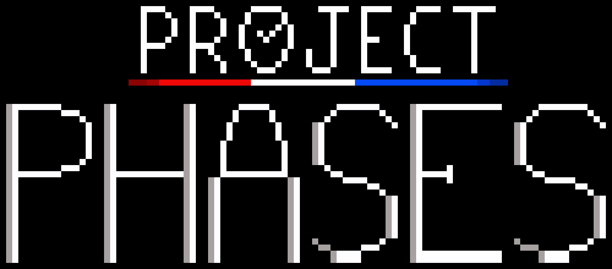
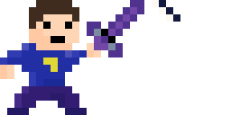
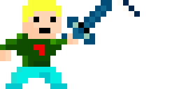
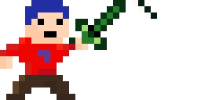

Project Phases

Project Phases is an RPG with a unique battle system. Overcome your enemies with
quick thinking in a timeline-based system. The game is being developed by Soltairus
and has no release date at this point.
Updates are released in big batches.
Goals are set for what I want to get done in that update and once I complete all the objectives I post the update.
Updates come in video form on YouTube for a quick, visual overview of the game.
They are also posted on this website here to get in more detail about smaller changes and features and the challenges that came while developing them.
Please keep in mind this game is in active development and is subject to change.
Battles
Battles are based on a real-time timeline system. The timeline is split into the Attack (Red), Wait (White) and Defend (Blue) phases with differnt things happening in each one.
Attack Phase
In the Attack phase, you can select your actions for that turn. This can include attacking, using items, waiting etc. Each character has their own unique attacks. You can do as many actions as you want given you have enough Time and Points. Mastering the attack phase is the key to victory.
Defend Phase
In the Defend phase, you will take little to no damage from attacks. Some attacks however can do massive damage in the Defend phase if you aren’t careful. Setting up your timeline to get hit in the defend phase is key to stay ahead of the curb. Think ahead and know your options to minimize damage.
Wait Phase
The wait phase is a resting phase for all character. Everyone is vulnerable in this phase and will take full damage if attacked. Minimizing the amount of time, you spend in the Wait phase is an important step to victory, though it’s much easier said than done.
Characters
Daryl
Daryl is a young man who has been tasked to protect his hometown, Arlette. His journey takes him through caves, lakes, and canyons to defeat those who threaten his home. He carries his trusty sword with him to ensure success.
Clint
Clint is an old mage along for the ride. He is most proficient in healing others, but when he must fight, he will use his magic to attack his foes tricky spells!
Oliver
Oliver is a headstrong warrior who tends punch his way out of a situation. While he can be a bit much to handle, he packs a mean fiery punch.